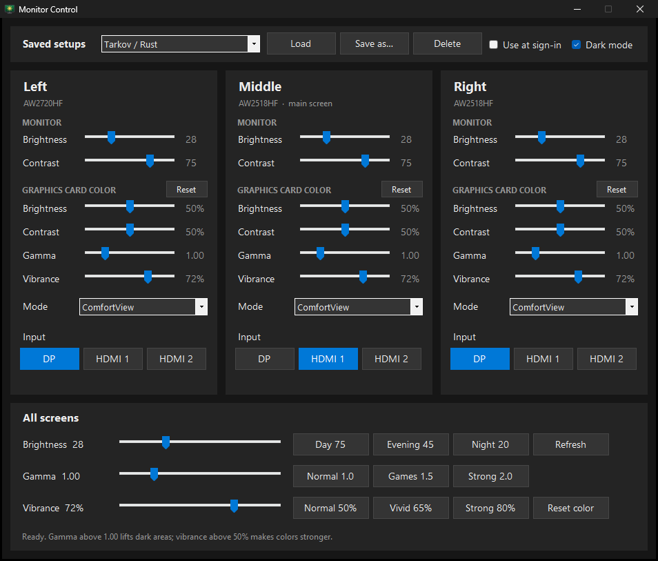

One window for my three monitors: brightness, contrast, game modes and inputs, NVIDIA-style gamma and vibrance on an AMD graphics card, and saved setups for gaming, night and movies.

I wanted to dim my screens and switch inputs without reaching for the monitor buttons. I also wanted the gamma and vibrance settings NVIDIA cards have, on my AMD card, so I could see into the shadows in Rust and Tarkov. So I built one window for all of it.
It's made for my desk: three Alienware monitors (an AW2720HF and two AW2518HF) and an AMD Radeon RX 9070 XT. That's the only hardware it has been tested on.
Talks to each monitor over DDC/CI: the same settings as its own menu buttons, per screen or all at once.
Standard, FPS, MOBA/RTS, RPG, SPORTS, Game 1 to 3 and ComfortView, as each of my Alienware screens reports them.
Switch a screen between DisplayPort and HDMI, for example to a console. It asks first, since your PC picture leaves that screen.
Lifts dark areas so you can see into shadows, without washing out bright parts. Per screen, from 0.5 to 3.0.
NVIDIA-style digital vibrance on an AMD card (the driver's saturation), plus the card's own brightness and contrast.
Save every screen's settings under a name and load them back. One setup can be applied each time you sign in to Windows.
Brightness, contrast, modes, inputs, gamma, vibrance, color reset and saved setups also work from a shortcut or a script.
| Setup | What it sets on every screen |
|---|---|
| Tarkov / Rust | FPS mode, brightness 75, gamma 1.5, vibrance 65% |
| Night | ComfortView, brightness 20, gamma 1.0, vibrance 50% |
| Movies / TV | Standard, brightness 55, gamma 1.0, vibrance 55% |
All three keep contrast at 75. Gamma 1.0 and 50% vibrance are normal. A setup never changes which input a screen is on. These were made on my screens, so save your own on yours.
| Command | What it does |
|---|---|
MonitorControl.exe list | Every screen and its current values |
MonitorControl.exe brightness 40 left | Brightness 0 to 100. Leave out the screen for all of them. |
MonitorControl.exe contrast 75 | Contrast 0 to 100 |
MonitorControl.exe mode fps right | A picture mode (Dell and Alienware) |
MonitorControl.exe input hdmi1 middle | Switch one screen's input. This one doesn't ask first. |
MonitorControl.exe preset night | Day 75, Evening 45 or Night 20 brightness on every screen |
MonitorControl.exe gamma 1.5 | Gamma 0.5 to 3.0, or normal |
MonitorControl.exe vibrance 70 | Vibrance 0 to 100%, or normal (AMD) |
MonitorControl.exe color reset | Graphics card color back to normal |
MonitorControl.exe setup "Tarkov / Rust" | Apply a saved setup (setup list shows them) |
A screen is left, middle, right or a model
name. Exit code 0 means everything worked, 1 that something failed, 2 a bad command. The graphics card's
brightness and contrast, and saving, deleting and Use at sign-in, are only in the window.
I've only tested it on my own three monitors and AMD card. The rest of this comes from vendor docs, Microsoft's docs and other people's reports, not from my testing.